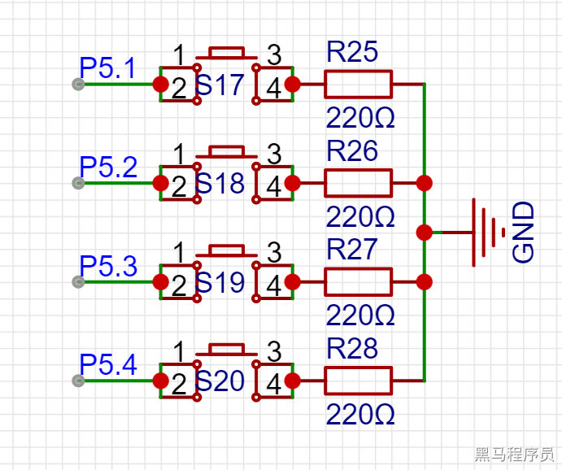
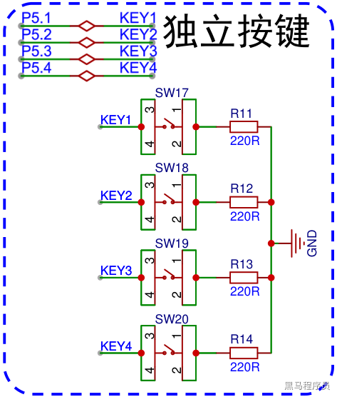

<!DOCTYPE lake>
<h2 data-lake-id="tvvHo" id="tvvHo"><span data-lake-id="u3f28f298" id="u3f28f298">学习目标</span></h2><ol list="u64efbd9b"><li data-lake-id="ue86c352b" fid="ue5c9a804" id="ue86c352b"><span data-lake-id="u04c37cee" id="u04c37cee">能够读取按键操作</span></li><li data-lake-id="u14afcc9a" fid="ue5c9a804" id="u14afcc9a"><span data-lake-id="u493b5047" id="u493b5047">能够处理按键消抖</span></li></ol><h2 data-lake-id="wxDyV" id="wxDyV"><span data-lake-id="u87cc5b0d" id="u87cc5b0d">学习内容</span></h2><h3 data-lake-id="N6duw" id="N6duw"><span data-lake-id="uc86a8f35" id="uc86a8f35">原理图</span></h3><p data-lake-id="ub48807f5" id="ub48807f5"></p><p data-lake-id="u310809c5" id="u310809c5"></p><h3 data-lake-id="ZFQ0O" id="ZFQ0O"><br/></h3><h3 data-lake-id="ECPNk" id="ECPNk"><span data-lake-id="u6c1c169e" id="u6c1c169e">软件设计</span></h3><h4 data-lake-id="U1Cg3" id="U1Cg3"><span data-lake-id="u8c6240a9" id="u8c6240a9">要求</span></h4><p data-lake-id="u3be7b125" id="u3be7b125"><span data-lake-id="ucab1bb4d" id="ucab1bb4d">当用户按下，或者松开按键时，捕获到这个事件。将事件通过串口发出来。</span></p><h4 data-lake-id="EMEb3" id="EMEb3"><span data-lake-id="u77eff548" id="u77eff548">分析</span></h4><p data-lake-id="u708469b4" id="u708469b4"><span data-lake-id="u88d7fe6a" id="u88d7fe6a">监控引脚的高低电平变化。记录状态，比对实时状态。</span></p><ul list="ua84a1db4"><li data-lake-id="u57abf558" fid="u67f5fddf" id="u57abf558"><span data-lake-id="u9929a6bf" id="u9929a6bf">监控：死循环去读取电平信息</span></li><li data-lake-id="u2d9ac47f" fid="u67f5fddf" id="u2d9ac47f"><span data-lake-id="u3659b836" id="u3659b836">记录与比对：通过变量记录，实时拿到当前状态，与记录的上一次进行比对。</span></li></ul><h4 data-lake-id="pgpFS" id="pgpFS"><span data-lake-id="u789dd1b5" id="u789dd1b5">实现单个按钮</span></h4><span class="yuque-card-unsupported">[codeblock]</span><h4 data-lake-id="jAsDH" id="jAsDH"><span data-lake-id="u436c352c" id="u436c352c">实现多个按钮</span></h4><span class="yuque-card-unsupported">[codeblock]</span><h4 data-lake-id="wnlGc" id="wnlGc"><span data-lake-id="u48fa781e" id="u48fa781e">使用位操作存储状态</span></h4><span class="yuque-card-unsupported">[codeblock]</span><ul list="u65cd3791"><li data-lake-id="u7da2a0df" fid="ub66eaad0" id="u7da2a0df"><span data-lake-id="u216491ec" id="u216491ec">u16存储状态: 16个   </span><code data-lake-id="uea6391c5" id="uea6391c5"><span data-lake-id="u8d96f040" id="u8d96f040">1 &lt;&lt; i</span></code><span data-lake-id="uab54c516" id="uab54c516">	只能存 16 位</span></li><li data-lake-id="ud01e208e" fid="ub66eaad0" id="ud01e208e"><span data-lake-id="ubacd3479" id="ubacd3479">u32存储状态: 32个,  </span><code data-lake-id="u805a602f" id="u805a602f"><span data-lake-id="u6cc99c1d" id="u6cc99c1d">1 &lt;&lt; i </span></code><span data-lake-id="uee58ea75" id="uee58ea75">要改成 </span><code data-lake-id="u5703c6ba" id="u5703c6ba"><span data-lake-id="ue21cbb6c" id="ue21cbb6c">1L &lt;&lt; i</span></code><span data-lake-id="u3a573010" id="u3a573010"> 能存32位</span></li></ul><h3 data-lake-id="Qi0E1" id="Qi0E1"><span data-lake-id="u95b2ff7d" id="u95b2ff7d">按键消抖</span></h3><ol list="ucd51e7ac"><li data-lake-id="ue635f93b" fid="u2cee60d2" id="ue635f93b"><span data-lake-id="u55241983" id="u55241983">软件延时法：在按键按下时，使用软件延时一段时间，例如10毫秒，然后再检测按键是否还处于按下状态，如果是，则认为按键有效。这种方法简单易行，但会浪费一定的处理器时间，同时需要根据实际情况调整延时时间。</span></li><li data-lake-id="u4fae6440" fid="u2cee60d2" id="u4fae6440"><span data-lake-id="ud4555de0" id="ud4555de0">硬件滤波法：在按键输入引脚上添加RC滤波电路，可以有效地去除按键信号上的瞬间噪声。这种方法对于高频噪声的去除效果较好，但需要一定的电路设计能力。</span></li><li data-lake-id="u6c8b7673" fid="u2cee60d2" id="u6c8b7673"><span data-lake-id="u75d8634a" id="u75d8634a">程序消抖法：在程序中记录按键前后两次的状态，如果两次状态不同，则认为按键有效。这种方法可以根据需要调整检测时间，消抖效果较好，但需要额外的程序设计。</span></li></ol><p data-lake-id="u22ce805d" id="u22ce805d"><span data-lake-id="ua388689e" id="ua388689e">我们采用程序消抖法。</span></p><p data-lake-id="uc3ebf35b" id="uc3ebf35b"><span data-lake-id="u4826c617" id="u4826c617">​</span><br/></p><h2 data-lake-id="npRAR" id="npRAR"><span data-lake-id="u583c6d8c" id="u583c6d8c">练习题</span></h2><ol list="uc3cd806c"><li data-lake-id="u0fe5970f" fid="uad2e6afc" id="u0fe5970f"><span data-lake-id="ud31b54e3" id="ud31b54e3">实现按键操作</span></li><li data-lake-id="u969963ea" fid="uad2e6afc" id="u969963ea"><span data-lake-id="u4af37228" id="u4af37228">通过按键控制震动马达震动</span></li></ol>